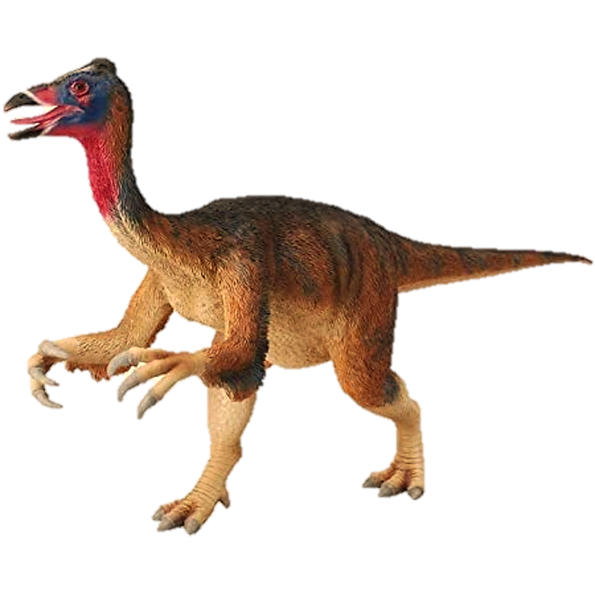

Dinosaurs that lived in Deserts
Deserts present a harsh ecological challenge to all forms of life, and dinosaurs were no exception. The most famous desert of the Mesozoic Era was the Gobi Desert of Central Asia as it was inhabited by some familiar dinosaurs. This will tell you about some dinosaurs which adapted to live in the desert.
1. Velociraptor

Velociraptor means "Speedy Thief". It is found in the Gobi Desert. It lived in the Late Cretaceous Period. It measured 6 ft and 91/2 in long, 1 ft and 71/2 in tall and weighed 431/2 lbs. It was a bipedal carnivore. It can run 40 km/h. Its hind legs had 3 claws and one among them was 21/2 in long and was used as a deadly weapon to stab its prey and wait for it to bleed to death. They hunted in packs, so they can hunt large herbivores. Their feathers were for regulating body temperature and for display.
2. Protoceratops
Protoceratops means "First Horned Face". It is found in the Gobi Desert. It lived in the Late Cretaceous Period. It measured 5.9 ft long, 2 ft tall and weighed 182 lbs. It lived in herds. It was a quadrupedal herbivore. Its muscular jaws were capable for a powerful bite. It had a large skull. The size and shape of the frill varied by individual. The frill was used for display and protection of the neck.
3. Deinocheirus
Deinocheirus means "Horrible Hand". It is found in the Gobi Desert. It lived in the Late Cretaceous Period. It measured 6 ft and 91/2 in long, 1 ft and 71/2 in tall and weighed 431/2 lbs. Its feet had 3 claws and one among them was 21/2 in long and was used as a deadly weapon to stab its prey and wait for it to bleed to death. They hunted in packs, so they can hunt large herbivores. Their feathers were for regulating body temperature and for display.